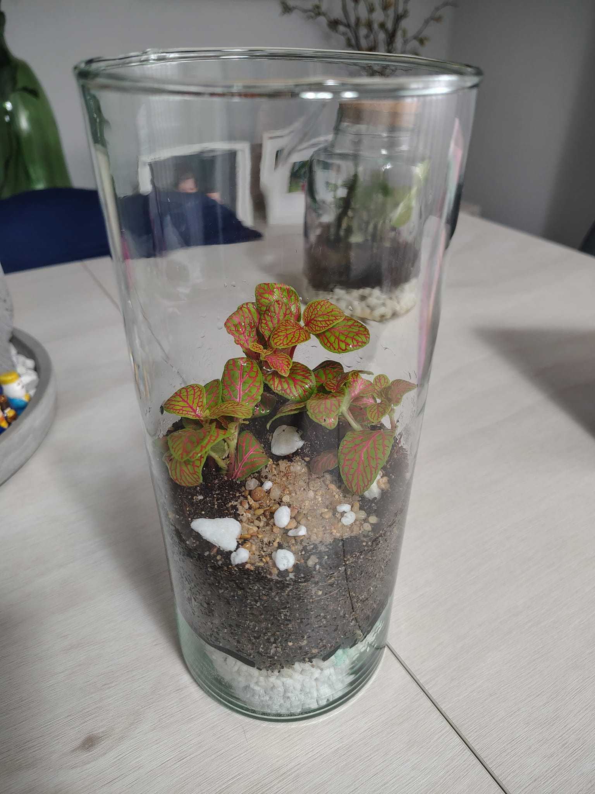
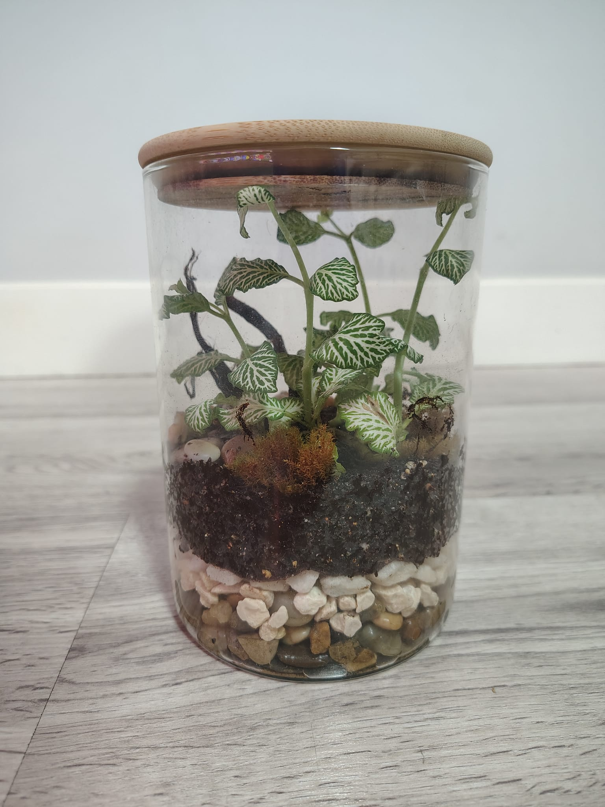

Lo principal es tener bien claro el tamaño del tarro de cristal que vas a usar.
1. Las plantas ideales para empezar
Desde mi experiencia, las Fittonias son las mejores protagonistas por su bajo mantenimiento.

Fittonia en uno de mis proyectos.
Publicidad
2. Materiales y capas
Necesitarás grava para el drenaje y una malla separadora para evitar que la tierra ensucie el fondo.

Aquí puedes ver la separación entre la grava y la tierra.
Truco: Pulveriza agua (flus flus) tras el trasplante para reducir el estrés de la planta.